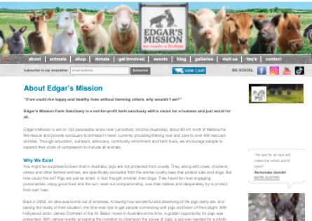

Edgar Mission
Edgar’s Mission is a not for profit sanctuary for rescued farmed animals. On the ground the animal sanctuary is bursting with visitors, however their website was kind of outdated feel.In this case study I'll show how I helped Edgar's by:
Edgar's needed:
- Redesigning their website
- Improving their donation and booking system
- Increasing customer trust


The Problem
The design of the original website is cluttered, text heavy and has poor information hierarchy, together these problems made site navigation difficult. This made users hesitant to donate on the website or even use the site itself.